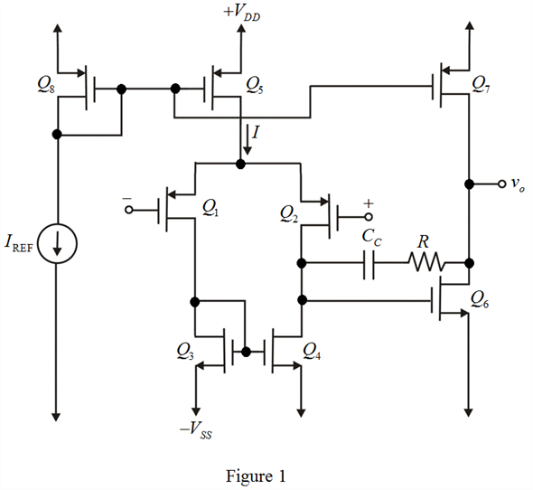
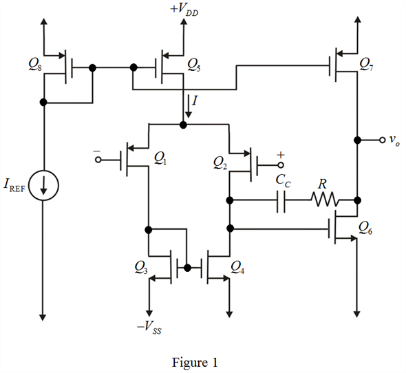

Refer to Figure 12.1 for a basic two-stage CMOS operational amplifier configuration in the text book.
The CMOS op-amp topology with a resistance  included in series with
included in series with  is shown in Figure 1.
is shown in Figure 1.

Refer to Figure 12.1 for a basic two-stage CMOS operational amplifier configuration in the text book.
The CMOS op-amp topology with a resistance included in series with is shown in Figure 1.

(a)
Determine the value of capacitance in Figure 1.
Substitute for  and
and  for
for  in the equation.
in the equation.
Thus, the value of capacitance,  is .
is .
(b)
Determine the value of frequency located at pole for which a phase margin of.

Substitute for  and for
and for  in the equation.
in the equation.
Determine the maximum allowable value of capacitance,  .
.
Substitute for  and for
and for  in the equation.
in the equation.
Thus, the maximum allowable value of capacitance,  is.
is.